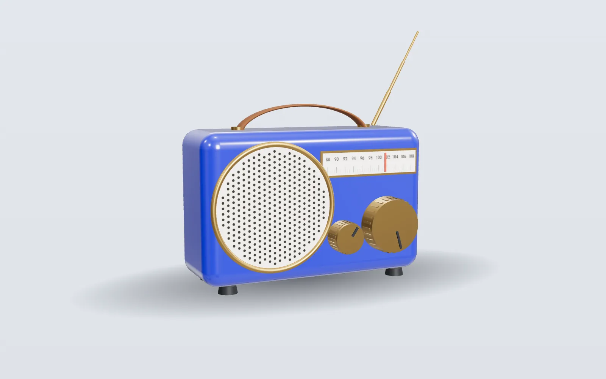

Halden One
A radio with one dial and no screen.
FM and DAB+, a three-inch paper cone, four AA cells. You turn it on, you turn it up, you find a station. That is the whole interface.

Halden One
FM and DAB+, a three-inch paper cone, four AA cells. You turn it on, you turn it up, you find a station. That is the whole interface.
A brass knob moves a needle across a printed scale behind glass. There is nothing to pair, update or charge, and you can read it from across the room.
Four screws hold the back. Behind it are one board, one speaker and a battery sled, each held by a plug, so any part can be swapped at a kitchen table.
The shell is pressed steel with a vitreous enamel coat, the same finish as a cast-iron pot. Pick one and turn it round.
| Bands | FM 87.5 to 108 MHz, DAB+ |
|---|---|
| Speaker | 76 mm paper cone, 5 W |
| Power | 4 AA cells or USB-C, 5 V |
| Shell | Pressed steel, vitreous enamel |
| Size | 320 by 200 by 120 mm |
| Weight | 1.4 kg without cells |
It is a made-up product for a brief2motion example. The radio on this page is not a photo or a downloaded model: it is about forty shapes built in code and lit in your browser with three.js.